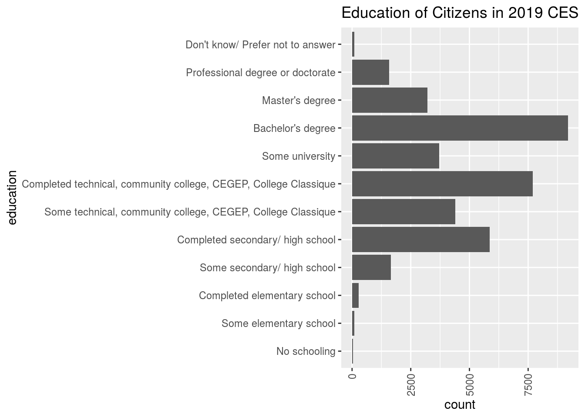
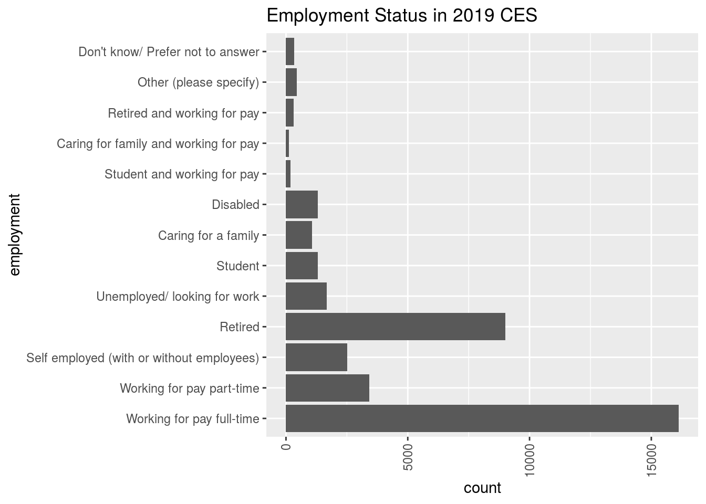

Abstract
Findings from the 2019 Canadian Election Study (CES) in Online Survey responses show that a majority of reported Canadian citizens are working full-time and have an educational background of either high school, community college or bachelor’s degree. This is evident of a correlation between education level and employment status.
Introduction
The following page contains an interesting finding in the 2019 CES data of Online Surveys. More specifically, responses in questions regarding educational background and employment status of Canadian citizens showed promising remarks.
Through the Online Surveys of the 2019 CES results, it was found that approximately 9192 individuals had a bachelor’s degree, 7702 had completed community college and 5865 had at least completed high school. In terms of employment status, approximately 16124 individuals were working full-time and 9008 were retired.
From these numbers, we see evidently that a vast majority of the citizens who responded to the 2019 CES Online Surveys had completed community college or had a bachelor’s degree. In addition, those majority of citizens were also in a employment status of working full-time or retired. This is an important finding to note that employment status is generally related to education level.
Data
A overall summary of R data that will mainly be used in this page will be the 2019 Canadian Election study for the Online Survey.
summary(decon)## ces_code citizenship yob
## Length:37822 Canadian citizen :36480 1985 : 814
## Class :character Permanent resident: 1342 1990 : 812
## Mode :character Other : 0 1955 : 799
## 1954 : 795
## 1960 : 794
## 1957 : 791
## (Other):33017
## gender
## A man :15551
## A woman :21980
## Other (e.g. Trans, non-binary, two-spirit, gender-queer): 291
##
##
##
##
## province_territory
## Ontario :14808
## Quebec : 8399
## Alberta : 4481
## British Columbia: 4354
## Manitoba : 1691
## Saskatchewan : 1340
## (Other) : 2749
## education
## Bachelor's degree :9192
## Completed technical, community college, CEGEP, College Classique:7702
## Completed secondary/ high school :5865
## Some technical, community college, CEGEP, College Classique :4394
## Some university :3716
## Master's degree :3207
## (Other) :3746
## lr lr_bef lr_aft
## Length:37822 Length:37822 Length:37822
## Class :character Class :character Class :character
## Mode :character Mode :character Mode :character
##
##
##
##
## religion sexuality_selected
## Catholic/ Roman Catholic/ RC :10771 Heterosexual :32632
## None/ Don't have one/ Atheist : 9834 Homosexual : 1566
## Agnostic : 2326 Bisexual : 1635
## Don't know/ Prefer not to answer: 2277 Other : 431
## Anglican/ Church of England : 1683 Don't know : 282
## United Church of Canada : 1561 Prefer not to say: 1276
## (Other) : 9370
## sexuality_text language_eng language_fr
## Length:37822 English:29213 French:12007
## Class :character NA's : 8609 NA's :25815
## Mode :character
##
##
##
##
## language_abgl
## Aboriginal language (please specify): 163
## NA's :37659
##
##
##
##
##
## employment income
## Working for pay full-time :16124 Min. :0.000e+00
## Retired : 9008 1st Qu.:4.300e+04
## Working for pay part-time : 3415 Median :7.200e+04
## Self employed (with or without employees): 2517 Mean :2.640e+56
## Unemployed/ looking for work : 1676 3rd Qu.:1.100e+05
## Student : 1314 Max. :6.748e+60
## (Other) : 3768 NA's :12266
## income_cat
## Don't know/ Prefer not to answer: 2894
## $30,001 to $60,000 : 2559
## $60,001 to $90,000 : 1955
## $1 to $30,000 : 1931
## $90,001 to $110,000 : 1035
## (Other) : 1889
## NA's :25559
## marital
## Married :17230
## Living with a partner : 6070
## Divorced : 2722
## Separated : 1374
## Widowed : 1395
## Never Married : 8458
## Don't know/ Prefer not to answer: 573
## econ_retro
## Got better : 5024
## Stayed about the same :16774
## Got worse :14065
## Don't know/ Prefer not to answer: 1959
##
##
##
## econ_fed
## Better : 6441
## Worse :13906
## Not made much difference :14330
## Don't know/ Prefer not to answer: 3145
##
##
##
## econ_self
## Better : 3815
## Worse :13669
## Not made much difference :18926
## Don't know/ Prefer not to answer: 1412
##
##
## Relevant Plots
decon %>%
ggplot(aes(x= education)) +
geom_bar()+
theme(axis.text.x = element_text(angle = 90, vjust=0.5, hjust=1))+
ggtitle("Education of Citizens in 2019 CES")+
coord_flip() The above ggplot shows a count of various responses to the education question in the 2019 Canadian Election study. We see a majority response among citizens having completed secondary/high school, Community college or Bachelor’s Degree.
decon %>%
ggplot(aes(x= employment)) +
geom_bar()+
theme(axis.text.x = element_text(angle = 90, vjust=0.5, hjust=1))+
ggtitle("Employment Status in 2019 CES")+
coord_flip() The above ggplot shows an majority number of Canadian Citizens are working for pay full-time, while many individuals are retired.
Weaknesses and Next Steps
Due to individual limited experience with github and R studio, some items on this website page does not look as visually appealing as desired. In this case, the variables that were graphed on the ggplots contained longer than usual names. As a result, both ggplots were graphed and rotated using “coordflip()”, in order to view all wordings in the survey responses for education and employment questions.
In addition, a regression test between variables employment and education would have been preferred, in order to show statistical computation of a correlation coefficient that would evidently indicate a strong correlation between employment status and education level.
Moving forward, next steps in improving this analysis of this data set would be to improve size scaling of ggplots and performing regression testing among the chosen observations in the data in order to display superior statistical findings.
References
- Stephenson, Laura B; Harell, Allison; Rubenson, Daniel; Loewen, Peter John, 2020, ‘2019 Canadian Election Study - Online Survey’, https://doi.org/10.7910/DVN/DUS88V, Harvard Dataverse, V1
- Paul A.Hodgetts and Rohan Alexander (2020). cesR: Access the CES Datasets a Little Easier.. R package version 0.1.0